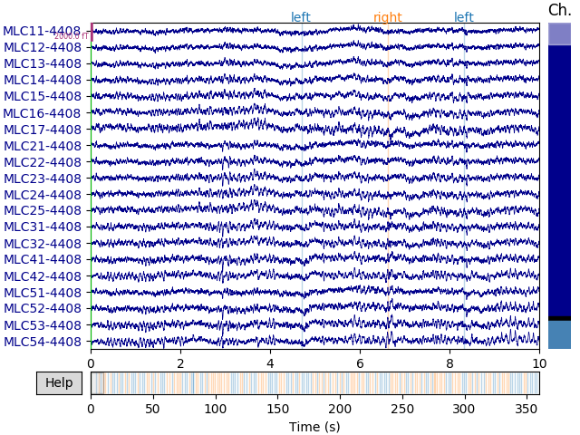
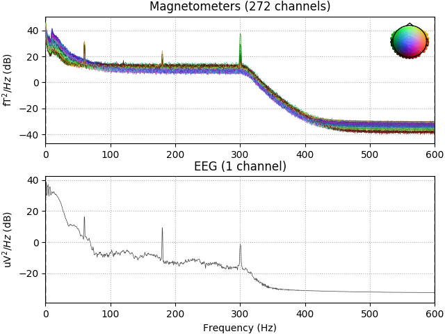
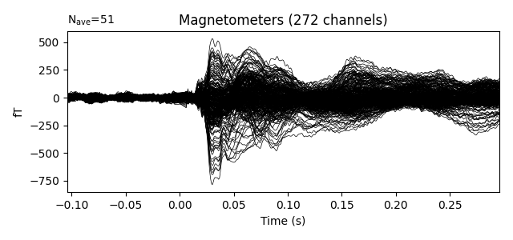
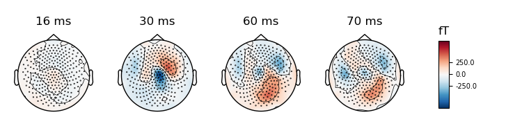

Note
Click here to download the full example code
Brainstorm raw (median nerve) dataset¶
Here we compute the evoked from raw for the Brainstorm tutorial dataset. For comparison, see 1 and:
References¶
- 1
Tadel F, Baillet S, Mosher JC, Pantazis D, Leahy RM. Brainstorm: A User-Friendly Application for MEG/EEG Analysis. Computational Intelligence and Neuroscience, vol. 2011, Article ID 879716, 13 pages, 2011. doi:10.1155/2011/879716
- 
- 
- 
- 
Out:
ds directory : /home/circleci/mne_data/MNE-brainstorm-data/bst_raw/MEG/bst_raw/subj001_somatosensory_20111109_01_AUX-f.ds
res4 data read.
hc data read.
Separate EEG position data file not present.
Quaternion matching (desired vs. transformed):
0.84 69.49 0.00 mm <-> 0.84 69.49 0.00 mm (orig : -44.30 51.45 -252.43 mm) diff = 0.000 mm
-0.84 -69.49 0.00 mm <-> -0.84 -69.49 -0.00 mm (orig : 46.28 -53.58 -243.47 mm) diff = 0.000 mm
86.41 0.00 0.00 mm <-> 86.41 0.00 -0.00 mm (orig : 63.60 55.82 -230.26 mm) diff = 0.000 mm
Coordinate transformations established.
Reading digitizer points from ['/home/circleci/mne_data/MNE-brainstorm-data/bst_raw/MEG/bst_raw/subj001_somatosensory_20111109_01_AUX-f.ds/subj00111092011.pos']...
Polhemus data for 3 HPI coils added
Device coordinate locations for 3 HPI coils added
Picked positions of 2 EEG channels from channel info
2 EEG locations added to Polhemus data.
Measurement info composed.
Finding samples for /home/circleci/mne_data/MNE-brainstorm-data/bst_raw/MEG/bst_raw/subj001_somatosensory_20111109_01_AUX-f.ds/subj001_somatosensory_20111109_01_AUX-f.meg4:
System clock channel is available, checking which samples are valid.
240 x 1800 = 432000 samples from 302 chs
Current compensation grade : 3
Reading 0 ... 431999 = 0.000 ... 359.999 secs...
Adding average EEG reference projection.
1 projection items deactivated
Average reference projection was added, but has not been applied yet. Use the apply_proj method to apply it.
Effective window size : 1.707 (s)
Effective window size : 1.707 (s)
Need more than one channel to make topography for eeg. Disabling interactivity.
Setting up band-stop filter
FIR filter parameters
---------------------
Designing a one-pass, zero-phase, non-causal bandstop filter:
- Windowed time-domain design (firwin) method
- Hamming window with 0.0194 passband ripple and 53 dB stopband attenuation
- Lower transition bandwidth: 0.50 Hz
- Upper transition bandwidth: 0.50 Hz
- Filter length: 7921 samples (6.601 sec)
200 events found
Event IDs: [1 2]
102 matching events found
Applying baseline correction (mode: mean)
Not setting metadata
1 projection items activated
Rejecting epoch based on EOG : ['EEG058']
Rejecting epoch based on EOG : ['EEG058']
No gradiometers found. Forcing n_grad to 0
No EEG channels found. Forcing n_eeg to 0
Adding projection: axial--0.100-0.000-PCA-01
Adding projection: axial--0.100-0.000-PCA-02
2 projection items deactivated
Created an SSP operator (subspace dimension = 2)
3 projection items activated
SSP projectors applied...
# Authors: Mainak Jas <mainak.jas@telecom-paristech.fr>
#
# License: BSD (3-clause)
import numpy as np
import mne
from mne.datasets.brainstorm import bst_raw
from mne.io import read_raw_ctf
print(__doc__)
tmin, tmax, event_id = -0.1, 0.3, 2 # take right-hand somato
reject = dict(mag=4e-12, eog=250e-6)
data_path = bst_raw.data_path()
raw_path = (data_path + '/MEG/bst_raw/' +
'subj001_somatosensory_20111109_01_AUX-f.ds')
raw = read_raw_ctf(raw_path, preload=True)
raw.plot()
# set EOG channel
raw.set_channel_types({'EEG058': 'eog'})
raw.set_eeg_reference('average', projection=True)
# show power line interference and remove it
raw.plot_psd(tmax=60., average=False)
raw.notch_filter(np.arange(60, 181, 60), fir_design='firwin')
events = mne.find_events(raw, stim_channel='UPPT001')
# pick MEG channels
picks = mne.pick_types(raw.info, meg=True, eeg=False, stim=False, eog=True,
exclude='bads')
# Compute epochs
epochs = mne.Epochs(raw, events, event_id, tmin, tmax, picks=picks,
baseline=(None, 0), reject=reject, preload=False)
# compute evoked
evoked = epochs.average()
# remove physiological artifacts (eyeblinks, heartbeats) using SSP on baseline
evoked.add_proj(mne.compute_proj_evoked(evoked.copy().crop(tmax=0)))
evoked.apply_proj()
# fix stim artifact
mne.preprocessing.fix_stim_artifact(evoked)
# correct delays due to hardware (stim artifact is at 4 ms)
evoked.shift_time(-0.004)
# plot the result
evoked.plot(time_unit='s')
# show topomaps
evoked.plot_topomap(times=np.array([0.016, 0.030, 0.060, 0.070]),
time_unit='s')
Total running time of the script: ( 0 minutes 15.786 seconds)
Estimated memory usage: 1440 MB